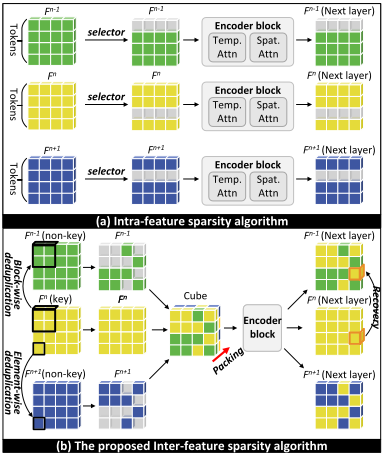
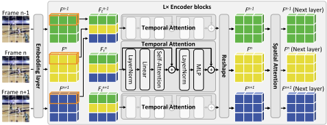
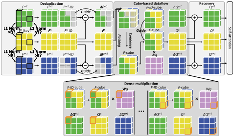
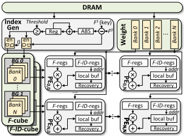
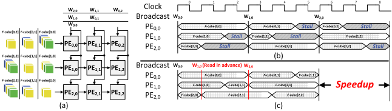
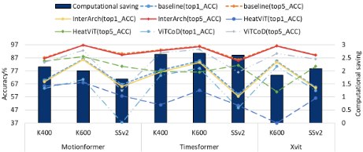
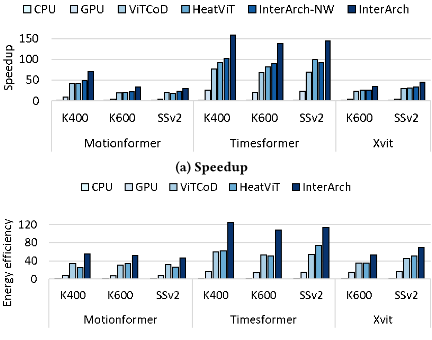
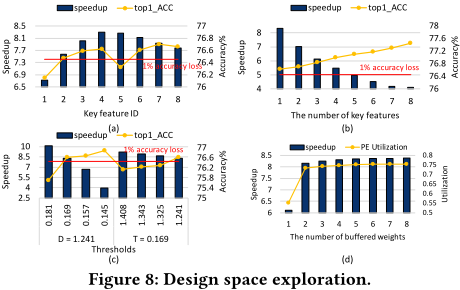

InterArch：通过特征间去重与基于 Cube 的数据流加速 Video Transformer
论文针对 Video Transformer（VidT）在视频理解任务中计算量与能耗过大的问题，指出已有稀疏化工作只挖掘单帧特征内部冗余、忽略帧间相似性，且依赖耗时的 fine-tuning。InterArch 框架分三层：算法侧以 batch 内一个关键特征为参考，对非关键特征做 block 级与 element 级 L1 Norm 分层去重，并用基于乘法分配律的加法恢复机制免训练地近似重建特征；数据流侧将稀疏差分特征沿时间维堆叠压缩成稠密 F-cube，配合 F-ID-cube 索引把稀疏计算转化为稠密矩阵乘法；架构侧在传统 spatial array 上小幅改造 PE，增加 index generator 与 inter-column balance 消除流水线停顿。实验显示相对 CPU/GPU/ViTCoD/HeatViT 加速 81.5×/40.6×/1.87×/1.59×，能效提升 77.7×/18.1×/1.81×/1.74×，top-1 精度平均仅降 1%。
Video Transformer（VidT，如 TimeSformer）在视频分类、动作识别等任务中精度高，但计算需求与能耗巨大。现有加速方法将视频切分为多个特征后仅做特征内（intra-feature）稀疏化，忽略了特征间（inter-feature）的时间维冗余；且通常需要长时间 fine-tuning 补偿精度损失；同时逐特征处理的数据流难以高效利用固定形状的 PE 阵列，已有专用架构对算法变化缺乏可扩展性与灵活性。
提出算法-数据流-架构协同的 InterArch 框架：(1) 算法侧：将 batch 内第 n 个特征设为关键特征，对非关键特征先做 block 级再做 element 级的 L1 Norm 去重（阈值 D 与 T），用 F-ID 矩阵记录冗余位置并保留差分特征 ΔF；通过 ΔQ+Q 的加法恢复（基于乘法分配律）近似重建被稀疏化特征的投影结果，避免重训练。(2) 数据流侧：将多个稀疏差分矩阵沿 batch 维堆叠并压缩零值，形成稠密 F-cube 与 F-ID-cube，用稠密矩阵乘法完成计算，由 F-ID-cube 控制乘积结果向各输出位置的分发与累加，避免稀疏计算的复杂控制开销。(3) 架构侧：在传统 spatial array 基础上改造 PE（增加 F-regs、F-ID-regs 与恢复加法器，output-stationary），设置 index generator 完成去重与 cube 构建，并提出 inter-column balance 方案利用空闲广播线预取权重、消除因 F-Vec 长度不均导致的流水线停顿。
精度：在 TimeSformer/Motionformer/Xvit 与 K400/K600/SSv2 上，top-1 与 top-5 精度平均仅下降 1% 与 0.5%；对比方法 ViTCoD 与 HeatViT 分别出现 9.7%/18.1%（top-1）与 7.9%/13.2% 的明显下降
相对 baseline 平均获得 2.205× 计算量节省；InterArch 探索 61% 冗余，而 HeatViT 平均仅剪枝 25% 特征
速度：相对 CPU（Intel Xeon Gold 6226R）、GPU（Nvidia A100）、ViTCoD、HeatViT 分别加速 81.5×、40.6×、1.87×、1.59×
能效：相对 CPU、GPU、ViTCoD、HeatViT 分别提升 77.7×、18.1×、1.81×、1.74×
inter-column balance 方案相对无该方案的 InterArch-NW 额外获得 1.5× 加速
设计空间探索：选第 4 个特征为关键特征时加速最大且精度损失约 1%；每 batch 设 1 个关键特征即可；PE 缓存权重数选 2；阈值 D=1.241、T=0.168 时实现 ≤1% 精度损失并获最佳性能
硬件实现：Verilog 实现，Synopsys Design Compiler 在 28nm、500MHz 下综合，片上 buffer 用 CACTI 7 建模，off-chip DRAM 采用基于 HBM2（256 GB/s、1.2 pJ/bit）的模型
区别于 DynamicViT/Evo-vit/HeatViT 等在单帧特征内部做 token 剪枝且常需重训练的路线，以及 ViTCoD 依赖训练数据集固定稀疏模式的方案，InterArch 的主要创新是：(1) 在特征间（时间维）做 block 级+element 级分层去重，直接利用视频帧间相似性；(2) 用基于乘法分配律的加法恢复替代 fine-tuning，免重训练；(3) cube-based dataflow 把稀疏计算转成稠密计算，避免稀疏控制开销并兼容固定形状 PE 阵列；(4) 仅轻微修改传统稠密加速器的 PE 即可支持任意稀疏算法，架构具备可扩展性。
相关度级别：low
命中能力域：无明显对应
理由：论文属于 AI 加速器的算法-数据流-架构协同设计，核心创新（特征间去重算法、cube 数据流、PE 阵列改造）均不涉及内存/互连 IP 的架构、RTL 交付或验证方法学，与团队 2.1~2.7 七个能力域的核心技术与代表工程场景无实质交集。论文虽包含 Verilog RTL 与 Design Compiler 综合流程，但属团队已具备的常规能力，无方法学增量；对 HBM2 的引用仅是评估用的 DRAM 功耗/带宽模型，不构成内存 IP 设计内容。故判定为 low、无明显对应。
建议动作：仅了解结论
InterArch：基于特征间去重与立方体数据流的视频Transformer加速
Xuhang Wang 1 = , Zhuoran Song 1 = *, Xiaoyao Liang 1
1 上海交通大学计算机科学与工程系，中国上海
在面向视频的任务领域，视频Transformer模型（Video Transformer models, VidT）作为视觉Transformer（vision Transformers, ViT）的演进，已取得相当大的成功。然而，其广泛应用受到巨大计算需求和高能耗的制约。解决这些局限进而提升VidT效率已成为热点话题。当前方法通过将视频划分为若干特征并施加特征内稀疏性来解决这一挑战。然而，这些方法忽略了特征间冗余这一关键点，且往往在微调阶段引入漫长的延迟。为此，本文提出InterArch，一个旨在显著提升VidT效率的定制化框架。我们首先设计了一种新颖的特征间稀疏算法，由层次化去重与恢复构成。去重阶段利用块级和元素级两个层次上的时间相似性，能够以粗粒度和细粒度两种方式消除跨特征的冗余计算。为避免长延迟的微调，我们采用一种轻量级恢复机制，为稀疏化后的数据构建近似特征。此外，InterArch融合了一种规整的数据流策略，该策略将稀疏特征整合起来，并有效地将稀疏计算转化为稠密计算。与此相辅，我们开发了一种配备增强型处理单元（processing elements, PEs）的空间阵列架构，专门针对我们提出的数据流进行了优化。大量实验结果表明，InterArch能够实现令人满意的性能加速与节能效果。
近年来，基于注意力机制，各类模型在计算机视觉（CV）领域取得了令人满意的精度。其中，代表性模型 Vision Transformer [7]（ViT）在精度上已超越传统的卷积神经网络（CNNs）。随着 ViT 在图像识别任务上的成功，研究人员提出了视频 Transformer（VidTs），将 ViT 的应用扩展至视频理解任务（例如，视频分类 [12]、视频动作识别 [2] 以及视频目标检测 [16]）。遗憾的是，这种高精度是以低效为代价的 [6]，尤其是在包含大量
本工作部分受到国家自然科学基金（Grant No. 62202288）的资助。= 同等贡献。*Zhuoran Song 为通讯作者。
允许免费制作本作品全部或部分的数字或硬拷贝以供个人或课堂使用，前提是拷贝不得出于营利或商业利益目的而制作或分发，且拷贝在首页带有本声明和完整的引用信息。本作品中归作者以外的他人所有的组件的版权必须得到尊重。允许注明出处的摘录。若要以其他方式复制、再版、上传至服务器或分发至列表，则需要事先获得特定许可和/或支付费用。如需申请许可，请联系 permissions@acm.org。
© 2024 版权归所有者/作者所有。出版权授权予 ACM。ACM ISBN 979-8-4007-0601-1/24/06 https://doi.org/10.1145/3649329.3656237

帧的面向视频任务中。因此，迫切需要缓解 VidT 巨大的计算与存储压力。
我们将上述局限归纳为三个不同的挑战。算法挑战：第一个挑战涉及设计一种无需大量微调即可探索特征间冗余的算法，以克服 LIMITATION 1 和 LIMITATION 2。数据流挑战：解决 LIMITATION 3 需要开发一种能够高效
将稀疏性应用于单个特征帧（记为 𝐹）是加速视觉 Transformer（ViT）相关模型的有前景趋势之一 [18]。一个典型的例子是 HeatViT [6]，如图 1 (a) 所示，它实现了一个选择器，用于动态评估并剪枝每个特征 𝐹 中重要性较低的 token。然而，尽管取得了这些进展，当前方法仍存在若干关键局限性：局限性 1，它们主要集中于单个特征内部的冗余，忽视了处理特征间相似性的潜力。这一疏忽限制了进一步提升性能的机会。局限性 2，它们通常需要大量的微调来弥补精度损失。对于涉及大量帧的面向视频的任务而言，这一点尤为沉重，因为其重新训练过程变得极其耗时且耗费资源。局限性 3，由于 token 数量在不同特征之间各不相同，逐特征的数据流难以高效利用固定形状的处理单元（Processing Element, PE）阵列，导致资源利用率欠佳。局限性 4，其所开发的专用架构缺乏可扩展性与灵活性，当算法发生变更时会带来困难。
处理形状各异的特征。架构挑战：最后一个挑战围绕构建一种能够无缝执行各种稀疏性算法、且无需进行重大硬件修改的架构而展开，以解决局限性 4。
在本文中，我们提出了一种名为 InterArch 的视频Transformer（VidT）加速框架，该框架包含三项创新。在算法方面，我们设计了一种特征间稀疏化（inter-feature sparsity）算法，通过利用特征之间天然存在的冗余来消除特征间的相似性。其基础概念涉及一个层次化的去重过程，由块级（block-wise）和元素级（element-wise）两个阶段组成。考虑到即使物体发生突然移动，背景仍在很大程度上保持静止，我们采用块级去重来粗粒度地消除特征间重复的背景信息。此外，在物体缓慢移动的场景中，我们的元素级去重能够精细地定位并消除由时间上相似的物体所引起的冗余。如图1（b）所示，所提出的算法首先将多个特征划分为关键特征与非关键特征。后续步骤包括将非关键特征切分成块，以便在块级和元素级去重过程中识别并消除冗余。与直接丢弃不重要数值的传统方法不同，我们的框架包含一种轻量级的恢复机制。该过程通过参考关键特征并保留关键信息来近似非关键特征，从而缓解显著的精度损失，并免除了重新训练的需要。在数据流方面，与传统串行处理特征的方法不同，我们建立了一种创造性的基于立方体（cube）的数据流，该数据流将关键特征与非关键特征沿时间维度堆叠，并压缩非关键特征中的零值，从而构建出一个稠密且均衡的立方体。所得立方体的维度得以缩减，通过利用特征之间的互补特性，可实现显著的加速。基于该数据流，我们通过对传统空间架构 [4] 的 PEs 进行少量修改，构建了一种架构。需要注意的是，所提出的架构具有良好的可扩展性。通过将稀疏特征堆叠成稠密立方体，我们可以支持任意稀疏算法。本文的主要贡献包括：
以及 77.7×、18.1×、1.81× 和 1.74× 的能效提升，同时保持模型精度。
我们以最具代表性的 VidT 模型 TimeSformer [2] 为例，来说明 VidT 的基本工作机制。如图 2 所示，首先，TimeSformer 接收多个帧，并将每一帧切分为多个 patch，这些 patch 作为序列中的 token。经过嵌入层的处理后，每一帧被转换为一个特征 𝐹，并被送入 𝐿 个编码块中进行特征提取。每个编码块的核心计算是时间注意力和空间注意力。时间注意力的输入由各特征中处于相同空间位置的 token 构成。例如，橙色方框中每个特征的第一个 token 被聚合在一起，形成一个新的特征 𝐹 𝑛 - 1 𝑡。每个新生成的特征都被视为时间注意力的一个输入。在时间注意力内部，每个特征通过线性投影变换为 𝑄、𝐾 和 𝑉。例如，在线性投影过程中，我们通过 𝐹 与权重 𝑊 𝑞 之间的矩阵乘法得到 𝑄。随后，𝑄、𝐾 和 𝑉 进行自注意力计算，即 𝑆𝑜𝑓 𝑡𝑚𝑎𝑥 ( 𝑄𝐾 𝑇 √ 𝑑 𝑘 ) 𝑉，从而得到输出。在送入空间注意力之前，每个特征会被重塑回其原始的空间分布。此后，空间注意力执行与时间注意力相同的计算。最后，空间注意力生成下一层的输入特征。

To reduce the computation of the attention mechanism, researchers propose a series of sparse attention algorithms [15, 17] and architecture designs [5, 6, 18].
On the hardware side, researchers accelerate the attention mechanism by software-hardware co-design. For example, ViTCoD [18] provides a fixed sparsity pattern for the attention score based on the training dataset and reorders the pattern into denser and sparser parts. By efficiently supporting the two parts with dedicated hardware, ViTCoD can reduce the overhead of the attention-based model. Moreover, Vitality [5] reduces the computational complexity by converting the softmax computation into a linear operation through a first-order Taylor expansion and reversing the order of calculations
On the algorithm side, various researchers impose sparsity on a single frame. DynamicViT [15] inserts a prediction module before encoder blocks to obtain the significance of each token and discard the tokens with low significance. Moreover, Evo-vit [17] retains those tokens that are more similar to CLS tokens.
InterArch: Video Transformer Acceleration via Inter-Feature Deduplication with Cube-based Dataflow
| Models.Models | Datasets.Datasets | Redundancy ratio.Temporal | Redundancy ratio.Spatial |
|---|---|---|---|
| K400 | 68.1% | 55.2% | |
| TimeSformer K600 | 68.4% | 50.5% | |
| SSv2 | 65.3% | 58.4% | |
| K400 | 68.9% | 63.9% | |
| Motionformer K600 | 68.3% | 61.3% | |
| SSv2 | 54.6% | 57.2% |
| Models.Models | Datasets.Datasets | Redundancy ratio.Temporal | Redundancy ratio.Spatial |
in self-attention. Additionally, HeatViT [6] proposed an MLP-based token selector to cascade prune tokens.
In summary, although existing works try to dig out the redundant information within features, they still fail to apply the attentionbased model to video-oriented tasks effectively as they overlook inter-feature similarity. Therefore, reducing the redundant information between features in the temporal dimension is crucial for accelerating attention-based models for video tasks. In this paper, we detect the similarity between features and remove redundant computations. One may argue that existing methods for skipping inter-frame redundancy in CNNs [8, 10] could be adapted for VidT. These approaches typically employ a learnable DNN model to select informative frames. However, such techniques are not well suited for optimizing VidT, whose structure and feature representation in VidTs significantly differ from those in CNNs.
为了验证是否存在足够的特征间冗余，我们使用知名的 VidT 模型 Motionformer [14] 和 TimeSformer [2]，在 Kinetics-400 [11]、Kinetics-600 [11] 和 SSv2 [9] 三个数据集上进行了分析。我们选取批次中的中间特征作为关键特征，其余特征作为非关键特征。若非关键特征中的某个值与关键特征中对应位置的差值小于预定义阈值 0.169，则该值被视为冗余。图 1 显示，时间注意力中冗余数据的平均比例为 65.6%，空间注意力中为 57.8%，这为实现高效的 VidT 提供了很大的空间。
3.1.1 Deduplication. We develop an inter-feature sparsity algorithm that contains deduplication and recovery. The core idea of the algorithm is to locate and eliminate elements in non-key features that are similar to key features. To locate redundancy, we add a hierarchical duplication detection that generates a 𝐹 - 𝐼 𝐷 matrix for each feature to record the positions of the similarity. Initially, the 𝐹 - 𝐼 𝐷 matrix is filled with features' IDs. In hierarchical duplication detection, we start by grouping multiple features into a batch. Within this batch, we designate the 𝑛 th feature 𝐹 𝑛 as the key feature, while the remaining features are categorized as non-key features. For each non-key feature, such as 𝐹 𝑛 - 1 , we divide it into blocks, covered by black boxes in Fig. 3. We then compute the L1 Norm between corresponding blocks in 𝐹 𝑛 - 1 and 𝐹 𝑛 . As shown in Eqn. 1, the L1 Norm is defined as the sum of the absolute values of the differences (denoted as Δ 𝐹 𝑛 - 1 𝑖 ) between corresponding elements in two blocks. If the L1 Norm falls below a predefined threshold 𝐷 , the entire block in 𝐹 𝑛 - 1 is deemed redundant. This step primarily targets larger, more obvious redundancies. Following the blockwise duplication detection, we delve into a finer granularity by examining the reserved blocks. The L1 Norm is calculated between elements in 𝐹 𝑛 - 1 and 𝐹 𝑛 . Any value in 𝐹 𝑛 - 1 whose L1 Norm with the corresponding element in 𝐹 𝑛 is less than another predefined threshold 𝑇 is considered redundant. For each redundancy in 𝐹 𝑛 - 1 , we set the corresponding position in 𝐹 𝑛 - 1 - 𝐼 𝐷 as zero. Through this meticulous process of block-wise and element-wise duplication detection, our algorithm efficiently uncovers redundancy within the non-key features.

Subsequently, we perform element-wise subtraction between 𝐹 𝑛 - 1 and 𝐹 𝑛 to obtain their difference Δ 𝐹 𝑛 - 1 . The subtractions can help us build a lightweight recovery, which will be further discussed in Section 3.1.2. Next, we apply sparsity to Δ 𝐹 𝑛 - 1 guided by 𝐹 𝑛 - 1 - 𝐼 𝐷 . Finally, the dense 𝐹 𝑛 and sparse Δ 𝐹 𝑛 - 1 can experience dense and sparse linear projections to gain performance improvement.
3.1.2 Recovery. Recovery is another important stage of our algorithm for avoiding severe accuracy loss. As shown in Fig 3, the recovery involves an element-wise addition between Δ 𝑄 𝑛 - 1 and 𝑄 𝑛 to reconstruct 𝑄 𝑛 - 1 . This method is grounded in the distributive law of multiplication, as outlined in Eqn. 2. The sparsity induced in Δ 𝐹 𝑛 - 1 is activated only when an element is identified as similar to the corresponding element in the key feature 𝐹 𝑛 . As a result, the sum Δ 𝐹 𝑛 - 1 + 𝐹 𝑛 can be seen as approximately equal to 𝐹 𝑛 - 1 . In other words, Δ 𝑄 𝑛 - 1 can be estimated by adding 𝑄 𝑛 and Δ 𝑄 𝑛 - 1 .
In this section, we delve into cube-based dataflow, a novel approach devised to streamline the process of sparse matrix multiplication. The conventional method of multiplying a sparse matrix Δ 𝐹 with a weight matrix 𝑊 𝑞 to generate Δ 𝑄 typically requires complex control overheads. To address the problem, as shown in Fig 3, we stack successive sparse matrices along a batch dimension and squeeze out their zero values to form a dense 𝐹 -cube. Alongside the 𝐹 -cube, we also generate a 𝐹 - 𝐼 𝐷 -cube by the same operation. The 𝐹 - 𝐼 𝐷 -cube serves as a reference structure, indicating the original locations of the non-zero elements. Finally, we perform dense matrix multiplication between the 𝐹 -cube and the weight matrix. For illustrative purposes, we use the weight matrix 𝑊 𝑞 as an example in the figure.

The lower part of Fig. 3 shows how to generate Δ 𝑄 𝑛 - 1 , 𝑄 𝑛 , and Δ 𝑄 𝑛 + 1 by a 𝐹 -cube and a weight matrix 𝑊 𝑞 . The process involves 9 vector-scalar products; we take the first step as an example. The 𝐹 -Vec in the top-left corner of the 𝐹 -cube, boxed by an orange block, containing two elements belonging to 𝑛 - 1th and 𝑛 th features, are multiplied with one weight. Correspondingly, 𝐹 - 𝐼 𝐷 -Vec in the topleft corner of the 𝐹 - 𝐼 𝐷 -cube records 'n-1' and 'n'. This step requires two multiplications, whose results are dispatched into Δ 𝐹 𝑛 - 1 and 𝐹 𝑛 and added with the partial sums of Δ 𝑄 𝑛 - 1 and 𝑄 𝑛 .
The dense matrix multiplication primarily consists of numerous vector-scalar products. Each vector-scalar product entails multiplying a vector with a weight. Specifically, this vector, identified as 𝐹 -Vec, is located in a position of 𝐹 -cube that houses multiple non-zero elements. Following the multiplication, the remaining task is to accurately allocate the product results to their designated positions within the output matrices. This allocation process is meticulously controlled by a corresponding vector, labeled as 𝐹 - 𝐼 𝐷 - Vec, in the 𝐹 - 𝐼 𝐷 -cube. Subsequent to the dispatching, these results are accumulated with the partial sums.
Overall, the cube-based dataflow engaged by the rigid 𝐹 -cube creatively performs dense multiplication between 𝐹 -cube and weights, which is able to avoid inefficiency due to shape variation of features.
如图4所示，我们提出了InterArch架构，其中包含用于𝐹 -cube、𝐹 - 𝐼 𝐷 -cube和权重的缓冲器、一个空间阵列（spatial array）以及索引生成器（index generator）。𝐹 -cube缓冲器被组织为若干bank组（bank group），每组由多个bank组成，每个组容纳一行𝐹 -Vec。在每个bank组中，一个𝐹 -Vec的元素被分布到不同的bank中。类似地，𝐹 - 𝐼 𝐷 -cube缓冲器按照相同原则容纳𝐹 - 𝐼 𝐷 -cube。空间阵列中的处理单元（PE）负责执行𝐹 -Vec与权重之间的向量-标量乘积，遵循输出固定（output-stationary）数据流范式。具体而言，最左侧的PE从𝐹 -cube和𝐹 - 𝐼 𝐷 -cube缓冲器中取回𝐹 -Vec及对应的𝐹 - 𝐼 𝐷 -Vec，而其他PE则从其左侧的PE接收它们。与此同时，权重被广播至各PE列。一旦所有必需的𝐹 -Vec和权重就位，PE便开始工作，并将乘积结果保存在其本地缓冲器中。此外，InterArch架构还配备了索引生成器，用于执行去重并生成𝐹 -cube和𝐹 - 𝐼 𝐷 -cube。
为实现向量-标量乘积，我们对空间架构 [4] 中的处理单元（PE）进行了修改。如图4所示，PE包含用于存储𝐹 -Vec的寄存器（简称F-regs）及其对应的𝐹 - 𝐼 𝐷 -Vec的寄存器（简称𝐹 - 𝐼 𝐷 -regs）、一个乘法器、一个加法器，以及一个用于保存部分和的本地缓冲器。对于一个长度为𝑁的𝐹 -Vec，PE需要𝑁个周期来完成向量-标量乘积。在每个周期中，乘法器从F-reg中读取𝐹 -Vec的一个元素，并将其与广播的权重相乘。随后，PE根据其𝐹 - 𝐼 𝐷 -Vec，通过加法器将该结果与本地缓冲器中对应的部分和进行累加。此外，PE还包含一个用于执行恢复操作的恢复模块，该模块由多个加法器组成。每个加法器从本地缓冲器中读取一个Δ 𝑄和一个𝑄，并将它们相加。
图5 (a) 展示了一个 3 × 3 阵列执行 𝐹 -cube 与权重矩阵之间的稠密乘法。由于每个 PE 列必须保持同步才能确保结果正确，𝐹 -cube 中各 𝐹 -Vec 长度的差异会导致流水线停顿。图5 (b) 进一步例示了这一问题。例如，𝑃𝐸 2 , 0 在周期 1 完成了其向量-标量乘积。然而，该 PE 随后进入一段利用率不足的时期，因为它必须等待 𝑃𝐸 0 , 0 和 𝑃𝐸 1 , 0 完成各自的计算。
图5 (c) 展示了采用列间均衡方案后的执行时间线。在周期 0，𝑃𝐸 0 , 0、𝑃𝐸 1 , 0 和 𝑃𝐸 2 , 0 读取第一列的 𝐹 -Vec，并将其与权重 𝑊 0 , 0 相乘。在周期 1，为避免停顿，𝑃𝐸 2 , 0 取来位于 [2,1] 位置——即第三行第二列（图中记为 𝐹 -cube[2,1]）——的 𝐹 -Vec，并利用广播线额外获取一个 𝑊 1 , 0。这样，𝑃𝐸 2 , 0 便可通过执行 𝐹 -cube[2,1] × 𝑊 1 , 0 而保持忙碌。
为了缓解由 𝐹 -Vec 长度不均引起的流水线停顿，我们提出了一种列间均衡方案。该方案的核心在于通过预先获取 𝐹 -Vec 并临时保存更多权重，使 PE 保持忙碌。具体而言，在 PE 空闲期间，该方案利用空闲的广播线插入并向 PE 存储一个额外的权重。与此同时，发生停顿的 PE 便可以提前读取 𝐹 -Vec，并使用这些缓存的权重开始计算，从而将空闲时间降至最低。
Index generators have two functions: (1) perform the deduplication, and (2) generate 𝐹 -cube and 𝐹 - 𝐼 𝐷 -cube. The index generator, shown in Fig. 4, equips a subtractor, an absolute value generator (ABS), an adder, a register, a comparator, and two latches. To perform the deduplication, we first compute the L1 Norm by following the Eqn. 2. Specifically, the subtractor calculates a difference Δ 𝐹 𝑛 - 1 𝑖 at the 𝑖 th cycle. Then, the ABS generates the absolute value of 𝐹 𝑛 - 1 𝑖 . After that, the adder accumulates the absolute value and stores a partial sum of the L1 Norm in the register. After obtaining the final L1 Norm, the comparator compares the L1 Norm with a threshold to determine whether the non-key feature contains redundancy. If the L1 Norm exceeds the threshold, the corresponding values in Δ 𝐹 𝑛 - 1 are not redundant. Then, the comparator controls the two latch outputs these values in Δ 𝐹 𝑛 - 1 with corresponding 𝐹 - 𝐼 𝐷 s
InterArch: Video Transformer Acceleration via Inter-Feature Deduplication with Cube-based Dataflow

| Modules | Parameter | Area (mm ) |
|---|---|---|
| Spatial array | 16 × 16 PEs | 2.086 |
| Index generators | 16 × 7 index generators | 0.329 |
| On-chip buffers | 96KB 𝐹 -cube-buffer 18KB 𝐹 - 𝐼𝐷 -buffer 12KB Weight buffer | 0.964 |
| Total | UMC 28nm: Area = 3.379mm 2 | UMC 28nm: Area = 3.379mm 2 |
| Modules | Parameter | Area (mm ) |


(b) Energy efficiency
to a bank of 𝐹 -cube buffer according to the 𝐹 - 𝐼 𝐷 s. For example, non-zero elements in Δ 𝐹 0 and their 𝐹 - 𝐼 𝐷 s '0' will be sent into the first bank in the first bank group of 𝐹 -cube and 𝐹 - 𝐼 𝐷 -cube buffers, respectively. As a result, the index generator picks up non-zero values in the Δ 𝐹 𝑛 - 1 and constructs 𝐹 -cube and 𝐹 - 𝐼 𝐷 -cube during filling buffers. Moreover, to reduce extra latency caused by the index generator in the critical path, we employ multiple index generators.
软件实现。为验证 InterArch 算法的有效性，我们选取 TimeSformer [2]、Motionformer [14] 和 Xvit [3]，并搭配 Kinetics-400（K400）、Kinetics-600（K600）和 SSv2 [9] 数据集。这些数据集是面向视频任务的流行大规模基准。所有模型均基于官方源代码实现，并使用 PyTorch v1.8.1 执行。由于我们的方法无需微调，我们直接使用官方预训练模型进行验证。此外，所提出的层次化重复检测中的块大小为 4，且在以下实验中批大小设置为 8。
对比平台。我们将本架构与广泛使用的硬件平台进行对比，包括一台服务器 CPU（Intel Xeon Gold 6226R）和一块 GPU（Nvidia A100）。对于 CPU 和 GPU，我们分别通过 PyTorch 中集成的 Time 库和 CUDA Event 评估其执行延迟，并通过 Nvidia-smi 和 power gadget 测量实时功耗。我们还在相同的计算资源预算下对比了两个最先进的视觉 Transformer（ViT）加速器，包括 ViTCod [18] 和 HeatViT [6]。为实现公平比较，我们关闭了它们的长延迟重训练处理。
硬件实现。我们使用 Verilog 实现所提出的 InterArch 架构，并通过 Synopsys Design Compiler 进行综合，以在 28nm 工艺下获得面积与功耗，设计频率为 500MHz。对于基于 SRAM 的片上缓冲区，如 𝐹-cube 缓冲区、F-ID 缓冲区和权重缓冲区，我们使用 CACTI 7 [1] 对其面积和功耗进行建模。对于片外 DRAM，我们遵循文献 [13]，该工作基于 HBM2 对高带宽存储器进行建模，带宽为 256 GB/s，数据访问能耗为 1.2 pJ/bit。表 2 给出了 InterArch 的详细设计参数与面积分解。
5.2.1 精度、性能与能效。图 6 展示了基线与所提出的 InterArch 在 TimeSformer、Motionformer 和 Xvit 模型上使用 K400、K600 和 SSv2 数据集时的精度与计算量节省。可以看到，InterArch 的 top 1 和 top 5 精度平均分别下降 1% 和 0.5%。ViTCoD 和 HeatViT 的 top 1 精度分别急剧下降 9.7% 和 18.1%，top 1 和 top 5 精度也分别下降 7.9% 和 13.2%。此外，InterArch 相比基线平均可获得 2.205× 的计算量节省，这为所提出的 InterArch 架构留下了较大的效率提升空间。
图 7 (a) 展示了 InterArch 相对于 CPU、GPU、HeatViT 以及未采用列间均衡方案（记为 InterArch-NW）的 InterArch 的加速比。InterArch 相比 CPU、GPU、ViTCoD 和 HeatViT 分别取得 81.5×、40.6×、1.87× 和 1.59× 的性能提升。与 CPU 和 GPU 相比，加速来源于所提出的特征间稀疏算法丢弃了特征中的冗余。与 ViTCoD 和 HeatViT 相比，加速来源于两个方面。首先，未经训练的特征稀疏模块效率低下。例如，HeatViT 平均只能剪枝 25% 的特征，而 InterArch 能挖掘 61% 的冗余。其次，稀疏模块会引入显著的开销。此外，与 InterArch-NW 相比，InterArch 进一步获得 1.5× 的加速，因为列间均衡方案可以为空闲的 PE 获取后续数据，使计算资源保持忙碌。
如图 7 (b) 所示，InterArch 的能效相比 CPU、GPU、ViTCoD 和 HeatViT 分别为 77.7×、18.1×、1.81× 和 1.74×。与 CPU 和 GPU 相比，InterArch 只需计算和访问非零值，从而降低了空间阵列和片外存储器消耗的能量。与 ViTCoD 和 HeatViT 相比，能耗节省可归因于以下因素：1) 特征间稀疏算法挖掘了更多冗余，使 InterArch 节省更多计算和数据搬运能耗；2) 由于特征和权重可以在空间阵列中充分复用，InterArch 受益于更少的缓冲区访问次数。

5.2.2 设计空间探索。本节中，我们在批大小为 8 的条件下，使用 K400 上的 TimeSformer 来验证改变关键特征的位置和数量时的加速比与精度。图 8 (a) 展示了关键特征位置的影响。加速比以 GPU 为基准进行归一化。我们将关键特征从第一个特征（编号为 1）改变为最后一个特征（编号为 8）。从该图中可以发现，第四个特征获得最大加速比，同时精度损失可忽略不计（1%）。由于居中的特征与其他特征之间的平均时间间隔更小，将这些特征设为关键特征增加了去重的机会，从而带来更高的性能。因此，我们选择第四个特征作为关键特征以获得最佳性能。
图 8 (b) 探究了关键特征数量的影响。我们将该数量从 1 变化到 8。随着数量的增加，图中显示精度损失和加速比均逐渐下降。由于我们仅对非关键特征执行稀疏化，关键特征越多意味着我们保留了越多关于特征的信息，从而带来更高的精度，但性能更低。总体而言，我们可以发现，在每个批次中设置一个特征就足以获得令人满意的结果。
图 8 (d) 描绘了每个处理单元（PE）中缓存权重数量的影响。我们将该数量从 1 增加到 8。随着数量的增加，列间平衡方案可以提前读取更多的 𝐹-Vec，从而实现更均衡的数据流。因此，实验显示出更高的加速比和 PE 利用率。然而，更高的性能是以 PE 中更多的权重寄存器为代价的。总之，由于显著的性能提升，我们倾向于将缓存权重的数量设为 2。
图 8 (c) 绘制了所提算法中提到的阈值 𝐷 和 𝑇 的影响。我们固定其中一个阈值并改变另一个。随着阈值的减小，我们获得更高的精度和更低的加速比，因为较大的阈值会错过更多的去重机会。总之，我们将 𝐷 设为 1.241，将 𝑇 设为 0.168，因为它们实现了 ≤ 1% 的精度损失，并获得最佳性能。
本文提出 InterArch，一个面向高效视频 Transformer（VidT）的框架。在算法方面，InterArch 引入了一种训练后的特征间稀疏化算法，以减少特征之间的冗余。在数据流方面，InterArch 将特征沿时间维度堆叠成一个稠密立方体。通过在稠密立方体与权重矩阵之间执行稠密计算，InterArch 避免了稀疏计算所需的硬件控制开销。在架构方面，InterArch 包含一个空间阵列，其中的 PE 相对于传统稠密加速器仅做了少量修改。实验表明，InterArch 能够在保持精度的同时带来令人满意的性能提升。